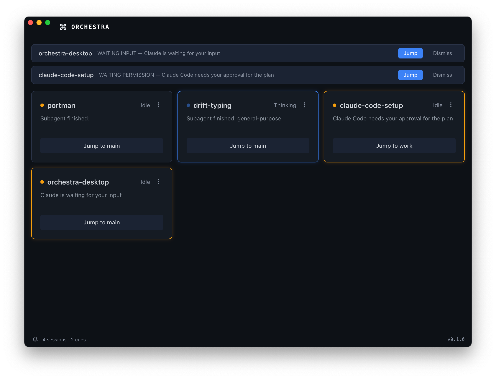

Monitor AI Coding Sessions
A macOS desktop app that monitors AI coding agent sessions in real-time. Get notified when your agents need attention.
download
Download for macOS (v0.1.0)
macOS 11.0+ · Apple Silicon

warning macOS Gatekeeper Notice
This app is not signed with an Apple Developer certificate. After downloading, run the following command to remove the quarantine flag:
xattr -cr /Applications/Orchestra.app